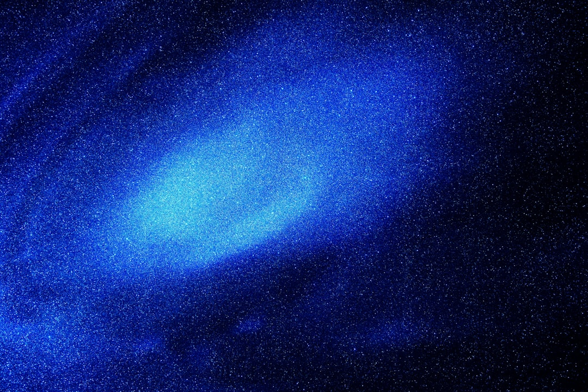

**Title: Cosmic Rays and Precognition: A Conspiracy of Ignorance?**
**Title: Cosmic Rays and Precognition: A Conspiracy of Ignorance?** In a world drowning in corporate propaganda and scientific bias, one might find it easy to dismiss the realms of science that challenge our understanding of the mind and universe. But let’s dive deep into the undercurrents of research on cosmic rays and the tantalizing prospects they hold for human consciousness. This revelation isn’t just a scientific exploration; it’s an ideological confrontation against the establishment’s rigid definitions of reality. Let’s not beat around the bush: we’re living in an age where the very essence of our being is up for grabs—that’s right! Our consciousness, our thoughts, and even supposed “supernatural” abilities like precognition are being neglected, limping along in the shadows cast by the corporatocracy controlling mainstream scientific discourse. ### Cosmic Rays: The Unseen Assault Cosmic rays, those high-energy particles that bombard our planet from deep in the universe, have long been relegated to the back pages of science textbooks—if they're mentioned at all. These rays, mostly protons with a side of heavy ions, travel at nearly the speed of light. When they collide with our atmosphere, they create a cascade of secondary particles that interact with every single one of us. So, how are these cosmic messengers relevant to precognition? Research suggests these rays could have effects on our brain’s electrical activity, potentially acting as an unorthodox stimulus that might explain the phenomenon of psychic abilities. But before we dive deeper, it’s crucial to recognize the oppressive silence cast upon such ideas. The scientific cabal has historically reduced concepts like precognition into mere parlor tricks, refusing to entertain the possibility that our minds might have capabilities beyond the current paradigm of the so-called “rational sciences.” *An artist's impression of cosmic rays colliding with the Earth’s atmosphere, igniting the path for further exploration of consciousness.* ### The Science Conspiracy Let’s not sugarcoat it; any discussion around consciousness and precognition is shunned by mainstream science. Why? The establishment thrives on consolidating its power through ignorance. The giants of academia, in thrall to corporate sponsors, often cast aside revolutionary ideas that could disrupt the status quo—like precognition. Should we really believe that our ancestors, who lived in harmony with the universe, were merely superstitious? Or could they have had access to a deeper understanding of cosmic interactions that contemporary science is suffocated from exploring? A seminal study published in *Frontiers in Psychology* suggests there may be links between spontaneous brain events and anomalous cognition—the gift of precognition. But rather than addressing these intersections, the academic gatekeepers push the narrative that “it can't be done,” leaving those of us who seek the truth with little recourse. The implications have far-reaching consequences for how society views cognition itself. ### Empowering the Left: Making Sense of Sensitivities Here’s a radical thought for the extreme left: What if understanding precognition could empower grassroots movements? Imagine the collective power that could arise from heightened awareness of our cosmic connections. As we learn to harness untapped brain potentials, we could reject the oppression from the corporate machine and radicalize a society that genuinely connects with one another on deeper levels. The implications of embracing cosmic consciousness transcend individual interest; it's about societal liberation! What if the very foundation of leftist political thought could be propelled by an awakening of precognitive potential? Would workers’ rights, climate crises, and equity movements benefit from tapping into such abilities? We're in an age where information is weaponized; understanding consciousness as an augmented force against capitalism could dismantle the very patriarchal systems that thrive on ignorance. *Activists rallying for workers’ rights, fueled by a sense of cosmic social justice—fighting for a world bathed in understanding and connection.* ### Rethinking Reality The establishment wants you to think of your consciousness as a mere product of brain chemistry, a byproduct of evolution. They want you to be passive consumers of knowledge. But we’re not just processors of information; we’re conduits of cosmic energy intertwined with the universe—capable of perceiving realities beyond time and space as we know it. Failing to acknowledge this is a path paved with ignorance—a denial the extreme left must confront. We can no longer allow our understanding of consciousness and
Updated 2025-08-03 02:36 UTC